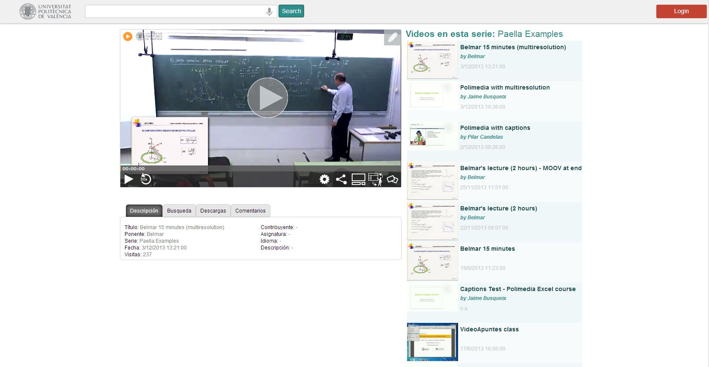
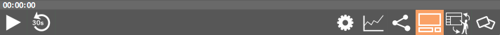
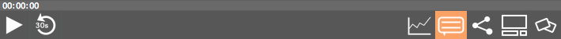
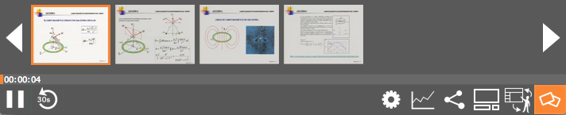
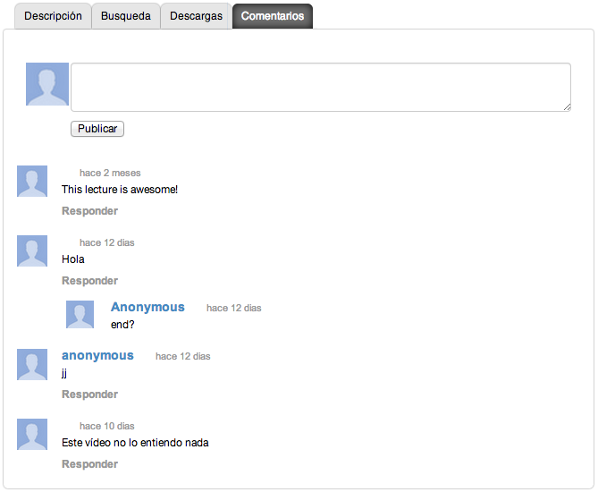
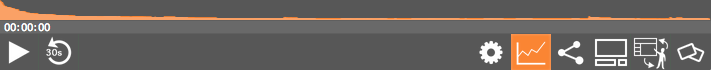

Paella Player usage and features guide
1 Basic usage
Paella is designed to display two video windows, with the camera and the presentation view, and some information regarding the lecture. You can navigate through the slides and tabs, but you can also begin viewing the lecture by pressing the play button on top of the video window or in the control bar.

Paella display areas
There are three main areas in Paella:
The video display, where you can see the video of the lecture hall and the video of the presentation device and the player control buttons. The bottom pane, where you will find useful information of this lecture The right pane, where you will find information related to this lecture, like other lectures for this series or lecture suggestions.

You can change the arrangement of those areas using the resize tool. You will find four sizes, from the smallest video window to the fullscreen video area.

Be noticed you can also drag the player window to any extent; Paella will fill the browser window accordingly.
Subtitles
Paella can display subtitles from a Matterhorn server. As today, if there are multiple subtitles for a lecture, Paella will only display the first one.

2 Managing views
The view button selects which arrangement between the lecture video and the presentation video is displayed, so you can focus on the most interesting points.
These views are configurable by the administrator of your site.
3 Locating content
In most cases you don’t want to see the whole lecture, but going to some interesting part of it. Paella provides several tools to navigate through the lecture and locate those interesting points.
The progress bar
The progress bar shows the current playing time. You can click over it to jump to any point in the lecture.
The slide navigation tool
Clicking on the last button you can open the slide navigation tool. There you can move your mouse over the slides and a high resolution slide will be shown over the presentation video.
Click on any slide to go to that point.

The view again tool
The view again plugin goes back 30 seconds into the past, to review any difficult point on the lecture.
The comments plugin*
Using the comments tool you can tell whatever you want about the lecture. Comments are public and anybody can view them

The footprints plugin
Clicking on the footprints button you can see a “heat map” on the views of the lecture, showing the most and least viewed parts of it. Click on the progress bar to go there if you are interested.

4 Sharing content
The social network plugin
The social network plugin allows publishing a link for this lecture in Facebook, Twitter or embed in your own page. Please take into account that the access policy of your server may not allow it.